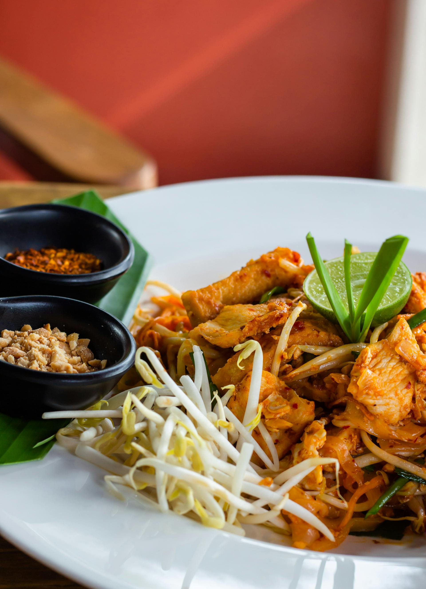

Slow-Cooker Thai Chicken

Description
This crockpot Thai chicken is a family-pleasing slow cooker recipe that's super easy to make. Start this dish in the morning, and it will be ready when you get home. Just add your favorite rice. Chicken thighs are better in this recipe than breast meat, which dries out in the crock pot; plus, thighs are more economical. The strength of the hot salsa dissipates when cooked, so this dish is not too spicy. You may even want to serve hot-sauce as an accompaniment.
Ingredients
- ¾ cup hot salsa
- ¼ cup chunky peanut butter
- ¾ cup light coconut milk
- 2 tablespoons lime juice
- 1 tablespoon soy sauce
- 1 teaspoon white sugar
- 2 tablespoons grated fresh ginger
- 2 pounds skinless chicken thighs
- ½ cup chopped peanuts, for topping
- 2 tablespoons chopped cilantro, for topping
Steps
- Combine salsa, peanut butter, coconut milk, lime juice, soy sauce, sugar, and ginger in the slow cooker; mix well. Place chicken thighs in sauce; spoon sauce over chicken to coat.
- Cover and cook on Low until chicken is very tender and sauce has thickened, 8 to 9 hours. A meat thermometer inserted into the thickest part of a thigh should read at least 165 degrees F (74 degrees C). Garnish with peanuts and cilantro before serving.
Home